In this example we consider the solution of the unsteady heat equation in a domain with moving boundaries. We demonstrate that the presence of moving boundaries only requires trivial changes to driver codes for corresponding fixed-mesh computations.
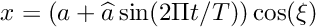 in the domain , bounded by the coordinate axes and the time-dependent ellipse , bounded by the coordinate axes and the time-dependent ellipse 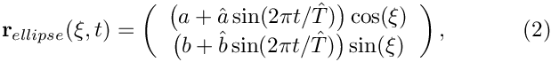 subject to Neumann boundary conditions,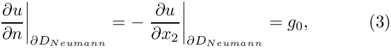 along the horizontal domain boundary![$ \partial D_{Neumann} = \{ (x_1,x_2) | x_1 \in [0,1], x_2=0 \} $](form_4.png) , and to Dirichlet boundary conditions, , and to Dirichlet boundary conditions,

Sketch of the time-dependent domain and the boundary conditions.
 and 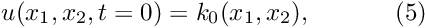 are given. and 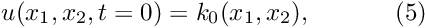 are given. |
![\[ \left. u\right|_{\partial D_{Dirichlet}}=h_0, \ \ \ \ \ \ \ \ \ \ (4) \]](form_5.png)
![\[ u(x_1,x_2,t=0)=k_0(x_1,x_2), \ \ \ \ \ \ \ \ \ \ (5) \]](form_6.png)
We choose the functions and so that
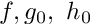
is the exact solution.
The solution represents the "usual" tanh profile, whose steepness is controlled by the parameter 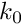 so that for 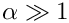 the solution approaches a step. The step is oriented at an angle  against the
against the  axis and its position varies periodically. The parameter 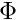 controls the amplitude of the step's lateral displacement, while
axis and its position varies periodically. The parameter 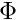 controls the amplitude of the step's lateral displacement, while  determines the rate at which its position changes. For
determines the rate at which its position changes. For  , the step remains stationary for most of the period and then translates rapidly parallel to the axis, making this a very challenging problem.
, the step remains stationary for most of the period and then translates rapidly parallel to the axis, making this a very challenging problem.
The figure below shows a snapshot of the animated solution, obtained from the spatially adaptive simulation discussed below, for the parameter values 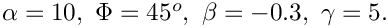
The mesh adaptation in response to the translation of the step can be seen more clearly in this contour plot, taken from another animation of the solution.

Background: ALE methods and the evaluation of time-derivatives in moving domains
oomph-lib's UnsteadyHeatEquations, the equation class that forms the basis for the isoparametric QUnsteadyHeatElements, is based on the Arbitrary Lagrangian Eulerian (ALE) formulation of the weak form of the governing PDE, (1). Within each element, the solution is represented by interpolation between the element's 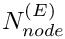 nodal values 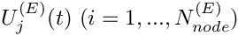 , i.e.
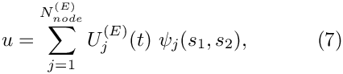
where 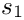 and 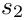 are the element's two local coordinates. The mapping between the local and global (Eulerian) coordinates is based on the interpolation between the nodal coordinates,
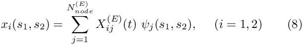
where 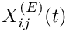 is the i-th global (Eulerian) coordinate of node j in the element. In moving-domain problems, where the nodal positions vary as function of time, the time-derivative of the nodal value, 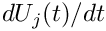 , represents the rate-of-change of 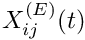 at the moving node, rather than the time-derivative of at a fixed Eulerian position,
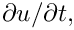 the quantity required in the PDE, (1).
The rate of change of at a moving node, , may also be expressed by the material derivative,
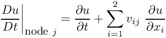
where
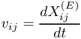
is the i-th velocity component of node j, often referred to as the "mesh velocity". The rate of change of , experienced at the (fixed) spatial position that coincides with the current position of node j is therefore given by
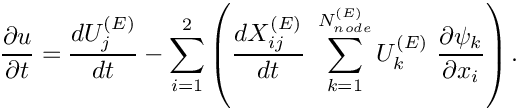
This is the form in which the time-derivative in (1) is implemented in oomph-lib's unsteady heat elements. The mesh velocity is determined automatically, using the Node's positional TimeStepper and the history values of the nodal positions. [By default, the positional TimeStepper is the same as the TimeStepper used for the evaluation of the time-derivatives of the nodal values; a different one may be assigned with the access function Node::position_time_stepper_pt().] This is why it is important to initialise the "previous nodal positions" in computations on fixed meshes, as demonstrated in the exercise in our earlier example: The previous nodal positions are initialised to zero when a Node is first created. Therefore, if the previous positions are not overwritten with the actual nodal positions, the positional TimeStepper would compute non-zero mesh velocities, even though the Nodes are stationary.
oomph-lib's unsteady Newton solvers automatically advance the time-history of the nodal positions when computing a new timestep. Performing computations on moving meshes is therefore extremely straightforward: The only task to be performed by the "user" is to update the nodal positions before a new timestep is taken. This is best done in the function Problem::actions_before_implicit_timestep().
The update of the nodal positions may be performed "manually", by assigning new nodal positions directly, using the function Node::x(...). However, in most cases, the deformation of the domain will be driven by the motion of its boundaries. We discussed in an earlier example, that in oomph-lib curvilinear, moving boundaries are typically represented by (time-dependent) GeomObjects which define the MacroElement boundaries of the Domain object associated with the Mesh. In this case, the update of the nodal positions may be performed by updating the parameters that control the shape of the GeomObject and calling the Mesh's node-update function Mesh::node_update(), as illustrated in the earlier example.
It is also possible (and, in fact, much easier) to include the time-dependence of the domain boundaries into the definition of the GeomObject, by making its shape, described by GeomObject::position(...), a function of time. In that case, the update of the nodal positions in response to the boundary motion merely requires a call to Mesh::node_update() in Problem::actions_before_implicit_timestep(). This is the approach we take in the present problem.
Global parameters and functions
As usual, we store the problem parameters in a namespace, TanhSolnForUnsteadyHeat, in which we also specify the source function, the prescribed flux along the Neumann boundary and the exact solution. The namespace is identical to that used in the fixed domain example.
Representing the moving curvilinear domain boundary by a time-dependent GeomObject
As discussed above, we will incorporate the time-dependence of the moving curvilinear boundary into the specification of the GeomObject that defines that boundary. For this purpose we represent the elliptical boundary by the GeomObject MyEllipse. Its constructor stores the geometric parameters (the mean values of the ellipse's half axes, 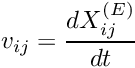 and 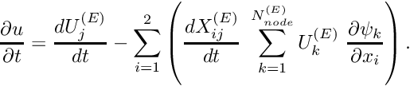 , the amplitude of their temporal variations 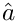 and 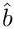 , and the period of the oscillation, 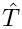 , in its private member data. We also store a pointer to a Time object to give the GeomObject access to the "current" and "previous" values of the "continuous time". The destructor can remain empty.
The "steady" version of the position(...) function must return the position vector to the point on the GeomObject, identified by its intrinsic coordinate xi, and evaluated at the current value of the continuous time, which we extract from Time::time():
The "time-dependent" version of the position(...) function must return the position vector to the GeomObject, evaluated at the t - th previous timestep. The value of the continuous time at that timestep is available from from Time::time(t):
We omit the code that defines the private member data.
The main function
Since the deformation of the domain and the update of the nodal positions will be handled automatically by adding a call to Mesh::node_update() to Problem::actions_before_implicit_timestep(), the driver code for this problem is exactly the same as that in the previous example in a fixed domain.
The Problem class
The Problem class and most of its member functions are exactly the same as in the previous example.
The Problem constructor
The Problem constructor is identical to the fixed-mesh version in the previous example, apart from the fact that we use the MyEllipse GeomObject to define the curvilinear Mesh boundary. Here is the relevant code fragment:
Actions before timestep
As discussed above, the addition of a single line to Problem::actions_before_implicit_timestep() suffices to update the nodal positions in response to the changes in the domain boundary.
The rest of this function is identical to the that in the fixed-domain version and updates the nodal values on the Dirichlet boundaries according to the values given by the exact solution.
Setting the initial condition
The only other change to the code occurs in the assignment of the initial conditions. The Nodes' positional history values are given by the positions at which the Nodes would have been at previous timesteps. Similarly, the history values themselves must be computed by evaluating the exact solution at the position at which the Nodes would have been at those timesteps.
This is achieved with a few minor changes to the previous version of this function. We loop over the previous timesteps, reconstruct the value of the continuous time at that timestep, and temporarily over-write the value of the continuous time stored in Time::time(). This ensures that the call to MyEllipse::position(...) during the node update operation returns the position vector to the domain boundary at that timestep. Following the update of the nodal positions (which moves them into the position they would have occupied at the previous timestep) we copy their positions and the value of the exact solution into the appropriate history values. Here is the relevant code fragment from the set_initial_condition() function:
Comments and Exercises
While the spatial adaptivity resolves the rapid spatial variations in the solution, the time-integration with a fixed timestep introduces errors during the phases when the solution undergoes rapid temporal variations. The animations of the exact and computed solutions show clearly that the computed solution lags behind the exact one during these phases. In the next example we will therefore demonstrate how to combine temporal and spatial adaptivity.
Source files for this tutorial
- The source files for this tutorial are located in the directory:
demo_drivers/unsteady_heat/two_d_unsteady_heat_ALE/ - The driver code is:
demo_drivers/unsteady_heat/two_d_unsteady_heat_ALE/two_d_unsteady_heat_ALE.cc
PDF file
A pdf version of this document is available.